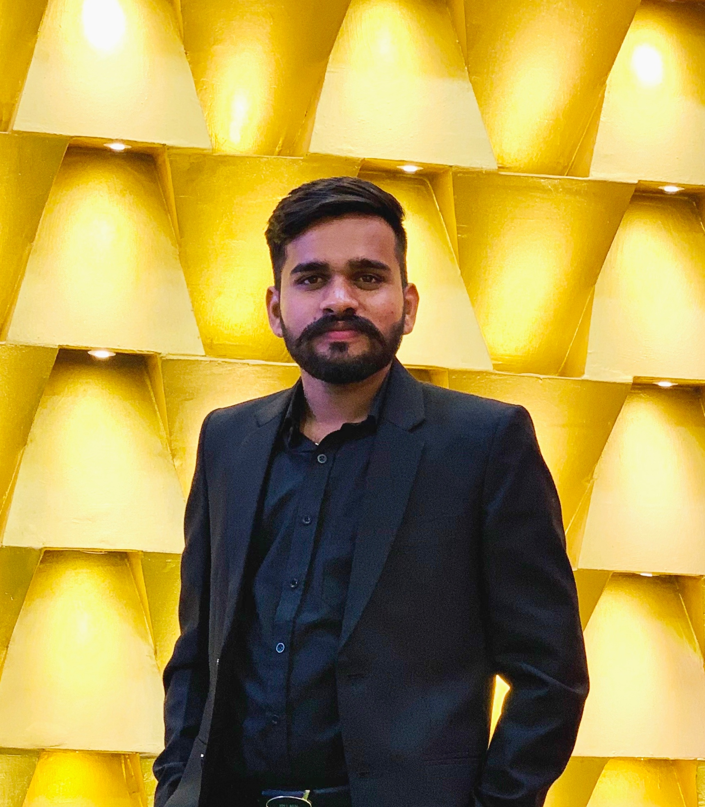

Yashpal
Ph.D. Scholar
Department of Computer Science and Engineering
Indian Institute of Technology Indore
Graph Theory • Parameterized Algorithms • Theoretical Computer Science

Working under the supervision of
Dr. Lawqueen Kanesh
Assistant Professor,
Department of Computer Science and Engineering,
IIT Indore
Research Areas
Graph Theory • Parameterized Algorithms • Theoretical Computer Science
Current Research
Designing efficient parameterized algorithms and kernelization techniques for graph problems on structured graph classes.
Email: phd2501101009@iiti.ac.in

Graph Theory • Parameterized Algorithms • Theoretical Computer Science
I am a Ph.D. Scholar in the Department of Computer Science and Engineering at the Indian Institute of Technology Indore (IIT Indore), working under the supervision of Dr. Lawqueen Kanesh, Assistant Professor. My research interests are in Theoretical Computer Science, particularly Graph Theory and Parameterized Algorithms. I am interested in the design and analysis of efficient algorithms for graph problems, parameterized complexity, kernelization, and structural graph theory. My current research focuses on algorithmic problems on special graph classes, including Tree Convex Bipartite Graphs and related optimization problems.
Indian Institute of Technology Indore
CGPA : 8.5
Kurukshetra University
CGPA : 8.3
phd2501101009@iiti.ac.in
Department of Computer Science, Indian Institute of Technology Indore, Indore, Madhya Pradesh, India